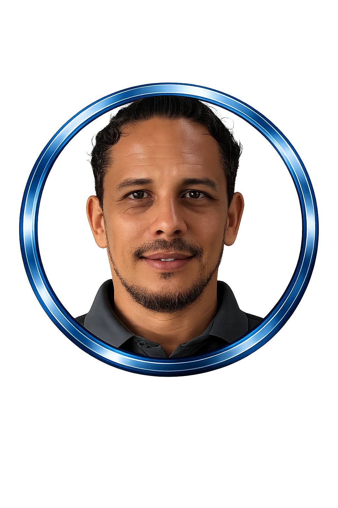

FUNDADOR

Silvio Dell’Oglio
Italiano residente en Costa Rica desde hace muchos años. Empresario, creador de conceptos y desarrollador de sistemas avanzados, escritor de libros y fundador del proyecto ADNEKO.
ADNEKO se ubica en el centro de Pérez Zeledón. Somos una Startup Autonomous–Ready.
Nuestra visión va más allá de desarrollar productos tecnológicos. ADNEKO crea sistemas capaces de integrar personas, inteligencia artificial, agentes autónomos, software y hardware dentro de una misma arquitectura operativa.
Utilizamos la innovación, la inteligencia artificial y la tecnología para crear nuevas capacidades para personas, profesionales, empresas, organizaciones y territorios.
Integramos inteligencia artificial, software, hardware, automatización, datos, comunicación y tecnologías visuales dentro de arquitecturas conectadas, escalables y preparadas para evolucionar.
Nuestro objetivo es reducir procesos manuales, aumentar la capacidad operativa y permitir que ADNEKO se adapte continuamente a la evolución de la inteligencia artificial.
Construimos hoy la infraestructura, los sistemas y los modelos que formarán parte de la empresa del futuro.
Italiano residente en Costa Rica desde hace muchos años. Empresario, creador de conceptos y desarrollador de sistemas avanzados, escritor de libros y fundador del proyecto ADNEKO.

Costarricense, empresario del sector de la construcción y distribuidor de HARDEN TOOLS CR. Cofundador, socio y representante legal de ADNEKO.